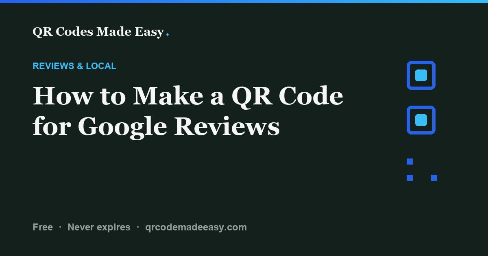

Google Review QR Code

Get your review link from Google Business Profile (Read reviews → Get more reviews → Copy), paste it into the free generator, pick your colors, and download. Two minutes. No account. The code is static, so it has no expiry timer and no redirect that can be switched off.
A QR code gets customers to the review form. It does not write or submit a review for them, and it cannot guarantee they will leave one.
Step 1: Get your Google review link
You need the review link from your own Google Business Profile. Do this on a computer, not a phone — Google only generates the QR image in a desktop browser.
- Go to business.google.com and sign in to the account that manages your profile.
- Find your business listing and select Read reviews, then Get more reviews.
- Click Copy to copy the review link. It looks like
g.page/r/…/reviewor a longer Maps URL.
Check the business name before copying. If you manage multiple locations, each one has its own review link.
Step 2: Make and download the code
- Open the generator and select the Website tab.
- Paste the review link you copied from Google.
- Keep the default dark code on a white background, or choose high-contrast brand colors. Low-contrast designs scan poorly in print.
- Add a center logo if you want. The tool increases error correction automatically, but test the finished print — a logo reduces the readable pattern area and some designs still fail.
- Download PNG for digital use or SVG for a vector file that scales to any print size without blurring.
Everything runs in your browser. The review link and any logo stay on your device; nothing is uploaded to this server or Google.
What customers see when they scan
When a customer scans the code, their phone opens the Google review form for your business. What they see next depends on whether they are signed in to Google.
- Signed in to Google: the review form appears and they can rate and write immediately.
- Not signed in: Google prompts them to sign in first. This is normal, not a broken code.
- Google Maps app installed: some phones open the Maps app instead of a browser. The result is the same review form.
The QR code opens the form. It cannot write a review, submit one, or tell you how many customers completed the process. The number of reviews in your Business Profile is the only real measure.
What to put on the sign
Give people a clear, optional invitation — something that tells them what they will get and why it is worth a moment of their time. For example:
Scan to leave an honest review.
Place the QR code below the invitation and include your business name. Keep it short. People scanning a counter card or receipt have already had an experience; they just need an easy path to tell others about it.
Avoid "Leave us five stars," "Review us and get 10% off," or any process that sends only happy customers to Google while routing unhappy ones somewhere else. Those practices violate Google's policy and can result in removed reviews or a Business Profile penalty.
Where to put it — and how to proof it
The best placements are places customers naturally pause after a good experience:
- Counter cards and table tents — visible at the moment they are deciding whether to leave a tip
- Receipts and packaging inserts — goes home with them
- Thank-you cards after a service appointment or delivery
- Storefront window — catches people on their way out
- Email signatures and follow-up messages — works as a link, not just a scan
Before ordering a full run, proof the printed version:
- Use the print-size calculator as a starting point for the right size, then test a physical sample at that size.
- Keep the quiet zone (the empty border) around the code intact. Do not crop it or put text inside it.
- Scan the printed sample with two phones from the actual distance people will stand. Watch for glare if you plan to use a plastic holder or window mount.
- Confirm the form opens your business, not a generic Google Maps page.
- Do not submit a test review unless it reflects a real customer experience.
A screen scan is not a proof. If the sample fails to scan, work through the QR scanning troubleshooting guide before ordering.
Does the code expire?
A static QR code has no built-in expiry timer. It encodes the review link directly into the pattern — there is no QR Codes Made Easy redirect, dashboard, or subscription to maintain. The code you download today will still open the same URL in three years.
The destination still has to work. Google controls the review link and review form. Test your displayed codes periodically and after changes to your Business Profile. If Google ever changes the link format or your profile is suspended, the code will stop working until the underlying issue is resolved.
See static and dynamic QR codes explained for the full breakdown of what can and cannot expire.
Review-request rules
Google's contribution policy prohibits:
- Offering anything of value (payment, discounts, free items, entry into a prize draw) in exchange for a review
- Asking only customers you believe are happy, while routing unhappy ones elsewhere
- Pressuring customers to review while they are still on the premises
- Asking for a specific star rating or review content
Invite genuine feedback from anyone who had an experience. The sign should make it easy and optional — not a transaction.
Common questions
How do I make a Google review QR code?
Get your review link from Google Business Profile (Read reviews → Get more reviews → Copy), paste it into the Website tab in the generator, choose your design, and download PNG or SVG. Free, no account.
Where do I find my Google review link?
Sign in to business.google.com, open your profile, select Read reviews, then Get more reviews, and click Copy. The link usually looks like g.page/r/…/review. You must do this on a computer — Google does not generate the link on mobile.
Can I get a Google review QR code without another generator?
Yes. On a computer, open your Google Business Profile, select Read reviews → Get more reviews, and right-click the QR code Google shows you, then choose Save image as…. That image is ready to use. Use this generator if you want to change the colors, add your logo, or export an SVG for print.
What do customers see when they scan?
Their phone opens the Google review form for your business. Customers signed in to Google can rate and write immediately. Those not signed in are prompted to sign in first. Some phones open the Google Maps app instead of a browser; the result is the same form. The code cannot submit a review automatically.
Will it work in a restaurant, shop, or at an event?
Yes, as long as the printed code is large enough to scan, the quiet-zone border is intact, and the destination is reachable. Test a printed sample at the actual size before ordering a run. Glare from a plastic holder or low contrast between code and background are the most common scan failures.
Can I change the review link after printing?
Not inside a static QR code. The URL is baked into the pattern. If you need to point to a different link, generate a new code and replace the printed versions.
Can I offer a discount for a review?
No. Google's policy prohibits incentives for reviews, including payment, discounts, and free goods or services. Invite an honest review without a reward.
Make your review code
Have your Google review link ready? Paste it into the generator, pick your design, and download the file.
Make a free review QR code